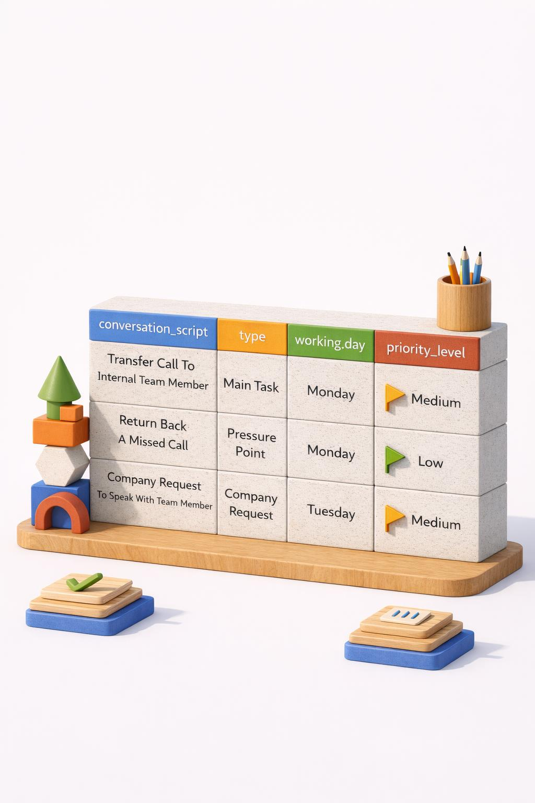

About Learn Data Analysis With Zee
The Learn Data Analysis with Zee initiative is focused on enlightening people about modern data work while staying grounded in the principles of traditional data analysis. It connects established analytical thinking with contemporary tools, practices, and ways of working, helping learners understand both the evolution of data analysis and its practical application today.
This initiative is free to access and is not registered, accredited, or formally certified. It exists purely in an educative spirit — to encourage curiosity, critical thinking, and skill development for anyone interested in learning more about data analysis, regardless of background or experience.
The material is intended to be used constructively: to learn, practise, reflect, and discuss. Learners are welcome to apply the ideas to their own projects and learning journeys, while using sound judgement and ethical practice.
In a friendly but professional spirit, the content should not be mis-used, misrepresented, or presented as original work. It is shared in the spirit of learn, practise, create - learn from this material, practise the ideas, and then go and build something of your own. Natural copyrights apply, as they do to all original educational material, maintaining the work remains respected, credited, and sustainable for the wider learning community.
Conversation Focused Customer Service Analysis - Data Ecosystem Using Word, Excel & Copilot
Contents:
- Calls Data
- How Artefacts Integrate During The Analysis Workflow
- Ethical Guidelines On Prompting For Conversation Design
- Conversation Script Core Components
- KPI Log For Conversation Scripts
- Conversation Scripts Version Control
- The Library For Conversation Scripts
- Actionable Insight Reached So Far
- What Telephonic Conversations Mean For Customer Service?
- What Now?
- DIA Exemption – Low Risk
- In Summary
- Assesment - Learn, Practice & Design

Calls Data
- Log information during live interaction into a spreadsheet named, 'call notes'
- Call notes consists of the following inputs, time of call, number called from, call type e.g. inbound/outbound, name of client/customer/company, note containing follow-up action required, status e.g. awaiting or executed, extra notes and conversation script ideas
- With each entry, as a follow-up action is repeated, the priority level increases
- Focus attention on follow-up action where priority level is highest
- Starting with the follow-up action which is at a high priority level, and a conversation script idea that exists, now is time to Prompt Copilot requesting a conversation script to assist during live interactions improving customer service
- This process, provides with insight into what conversation scripts are required as a result of live interactions and paves the way for a sustainable conversation script repository, which can result in customer feedback improvement and improve chances of transforming leads in the affirmative, because a living artefact such as a conversation script as a result of live interactions, can assist a live interaction and improve performance of the agent
- Further developments, improvements and updates too can take place, the more conversation scripts are used during live interactions
The starting point is logging live interactions, searching for, main tasks that most frequently occur. These tasks then form the basis for conversation scripts to be designed either by modifying pre-existing versions or by creating for the first time. Each conversation script is classified into sections based on related tasks that exist for, and are stored in a wider repository for re-use.
'In data analysis, the ability to read or search for data what ever location or state that may be found in is of utmost importance.'
The performance log is an essential part of this approach, the approach being, Read record from calls data, Transform into a conversation script, Classify the conversation script inside a repository, Log the conversation script as per use to track performance and then, Analyse to check how each conversation script is performing, and improving.
How Artefacts Integrate During The Analysis Workflow
Create New Conversation Script Based On Information Made Available Due To Calls Data
| 1 | Data source / Calls data |
| 2 | Data resource / Conversation script |
| 3 | Library for conversation scripts |
| 4 | KPI log for conversation scripts |
Ethical Guidelines On Prompting For Conversation Design:
-
Paste Existing Script Into A Copilot Chat And Include A Note That Want To Discuss Variations Or Improvements
-
Outline Criteria In A Copilot Chat And Request Varying Output
Prompt 1 Sample:
[Script]
Can I request you to help me by providing variations of the above script?
Can we discuss improvements?
Based on the above script, my requirements are, [requirements]
Prompt 2 Sample:
What follows is the criteria,
[criteria]
Can you provide varying scripts based on the above-listed criteria?
AI is excellent at generating text, and so long as prompts are detailed, they remain effective in providing conversation scripts.
One of the benefits of the paradigm shift from narrow AI to the broad AI era, is getting more work done individually, relying less on team members, allowing them to get more done while reducing the overall amount of time needed to work, using that time to contribute to progression of an industry rather than focusing only on individual or team level success.
'Because of AI, an individual can now perform conversation focused customer service analysis by themselves where previously an entire team's time, efforts and resources were being used'.
Prompt -> Output <-> Re-shape
Conversation Script Core Components:
After Copilot has provided with output, the structure can then be re-shaped as desired.
Each conversation script generally ought to consist of an:
- Opener - suited to requirement.
- Main flow - guided by data source{s}.
- Endpoint - that is both, friendly & professional.
Conversation scripts can be copied and modified to suit the requirements of the newly found tasks, if the contents are closely matching, this can be a speedier process than prompting Copilot each time and is in line with a fair-usage policy based on, 'Use AI only if required to do so'.
KPI Log For Conversation Scripts:
When conversation scripts have been designed, logging them as they are used during live interactions reveals what conversation script to prioritise, focus can then be applied on that during training phases.
This process sequentially guides the conversation scripts library with the higher priority one or the ones most used being the easiest ones to access for re-use, improving response timings during live interactions.
Not planning means planning to fail and this rule is equally important in customer service as is everywhere else, point being if are prepared for an interaction because of having a conversation script at hand this increases morale and is likely to improve rating of the customer service provided that can significantly improve chances of converting leads because have more time to focus on that in particular.
Because every conversation script ought to relate to the overall context therefore a way needs to be found to systematically improve the content inside of each of the conversation scripts and this is why each conversation script as is used during a live interaction is logged thereby making it easier to start improving the conversation scripts sequentially.

Conversation Scripts Version Control:
The reason why outdated versions of conversation scripts are not deleted is because if the updated version is not up to standards after it's deployment or is in production, then this outdated version is still available for use until the new version is prepared. They are therefore still available in the library but as updated version is deployed then the outdated ones are sent to an archives folder in the library so can be retrieved from there if need be.
The Library For Conversation Scripts:
Script creation & entry into the library for conversation scripts:
- Read frequently occuring task from raw data in data source / calls data
- Transform into a data resource / conversation script
- Classify into either main task or pressure point
At this point, scripts formally enter the library for conversation scripts
Library for conversation scripts structure:
There are three sections in the library for conversation scripts to store conversation scripts as per classification:
- Main tasks section
- Pressure points section
- Archives section
Live usage & performance tracking
- Scripts from main tasks / pressure points are used during live interactions
- As is used, is logged into a KPI log for conversation scripts
- A priority level is assigned to each conversation script that is logged
- Priority levels range from low to very high
- The more a conversation script is used, the priority level increments
Improvement & archiving loop:
- As live interactions take place, ways may be revealed as to how to further improve the content and thereby quality of the conversation scripts, this is where priority level classification helps to start improving those on a higher priority level first
- Conversation scripts may also need to be to be updated as changes take place in the way how tasks are handled internally
- Under both circumstances the outdated versions are saved in the archives section of the library and the updated one remains active in either main tasks or pressure points
Actionable Insight Reached So Far:
- Conversation scripts
- KPI log for conversation scripts
- Library for conversation scripts
- Increased review based feedback that harbors an improved conversion rate
What Telephonic Conversations Mean For Customer Service?
What Now?
Conversation focused customer service analysis expansion by creating a FAQ repository. An FAQ can not only be searched when required therefore significantly improving response time to real customer/client/company queries but, this knowledge base, can also serve as a means for new/updated conversation scripts.
DIA Exemption – Low Risk
All outputs within this ecosystem are classified under a DIA Exemption – Low Risk profile.
This means:
- data used is non‑sensitive and appropriate for Copilot consumption
- knowledge artefacts are approved, governed, and auditable
- AI usage remains compliant with internal and regulatory controls
The low‑risk designation enables broader Copilot usage while maintaining trust and accountability.
In Summary
This data ecosystem positions Microsoft 365 Copilot as a participant in a controlled, evidence‑based workflow.
By combining:
- dynamic conversation‑based prompting
- human review and refinement
- factual interaction and performance data
- low‑risk governance controls
The organisation makes sure that Copilot delivers consistent, accurate, and continuously improving value across customer service analysis.
Assesment - Learn, Practice & Design
Please note: Site under construction